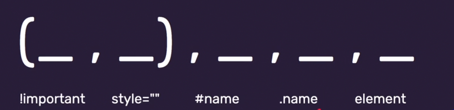

Tydzień 1
Wprowadzenie
Wyjaśnienie czym jest Frontent, Pokazanie
mapy frontendowca
Pokazanie i instalacja potrzebnych narzędzi jak grupa wsparci na
Slack oraz Visual code studio
 co ten
frontend
co ten
frontend
Wyjaśnienie czym jest Frontent, Pokazanie
mapy frontendowca
Pokazanie i instalacja potrzebnych narzędzi jak grupa wsparci na
Slack oraz Visual code studio
A więc Treść --> HTML który porzadkuje tą treść --> CSS warstwa
styli,
która upiększa nam wyświetlany takst --> Java Script która
wproszadzi interakcje i umożliwi zabawę tą treścią
Nauka podstawowych znacznikow:
<main> , <header> , <footer>, <section>,
<article> , nagłówki < h1-h6> oraz paragraf
< p>
Wszystko co nam sie wyświetla na stronie znajduje się w sekcji
body.
Wszystkie spacje i entery sa w html-u ignorowane.
ctr shift p -> format document --> wszystko nam sie ładnie
porzadkuje.
Ciekawe narzedzie do sprawdzania kodu to validator, szybko nam
powie czy nasz zapis jest ok.
Kazda sekcja powinna miec nagłówek, istotna sprawa bo wywala nawet
ostrzezenie w validatorze.
Style CSS opisujemy za pomoca regół ktora sklada sie z -->
selektora {właściwości: watości;} --> pod selektor wstawiamy np
nazwe znacznika ktory chcemy ostylowac,
a dalej juz jakas wlasność np kolor i wartosć.
Stylowac moze bezposrednio w pliku index w sekcji head , dodajac
znacznik style, lub tez w oddzielnym
pliku styli podajac w sekcji head link do naszego pliku ze
stylami.
Aby podac link do pliku css urzywamy znacznika
< link> w sekcji head.< Link href="nazwa pliku"
rel="stylesheet" type="text/css">
Narazie stylujemy po całych elementach a ale z czasem dowiemy sie
czegoś nowego :D
Poznajemy nowe znaczniki:
< br> - do przeniesienia lini.(Nie zamykamy tego
znacznika, domyka sie sam, nie ma pary)
< b>
do pogrubienia w celu wyróznienia jakiegoś tekstu ,
< strong>
do pogrubienia ale istotnego teksu jest to znacznik semantyczny
< i>
do kursywy w celu wyróżnienia słowa, tekstu,
< em> do kursywy w celu pogreślenia ironi , jest to
znacznik semantyczny
< a href="name"> opis łącza < /a>
- Linki , lącza na zewnatrz oraz wewnątrz dokumentu, np, przejscie
na góre strony , na dół, Lub też w inną zkładke.
< nav>
- Służy do nawigacji po stronie, takie zakładki, wyżucamy ten
znacznik poza main tak aby nawigacja pojawiala nam sie na kazdej
podstronie.
< img src="name" alt="name2">
Za pomocą tego znacznika wstawimy zdjęcie (Jest to znaczni
samodmykajacy sie). Podajemy żródło obrazka oraz niewidoczna w
przegladarce nazwe.
Poznajmy tez atrbuty
Atrybut id, < element id="name"> - Identyfikuje element
(przydaje se w nawigacji wewnatrze dokumentu).
Żeby przejść do danego miejsca o tym id używamy znacznika
< a href="#name">Przejdz do name < /a>
Bardzo ważne żeby użyć # przed nazwą inaczej nie zadziałą.
Atrybut alt - Tekst Alternatywny dla przeglarki.
Wykorzystywany przy wstawianiu zdjęcia.
Atrybut Style, < element style="własność:wartość;"> Jest
to tak zwane stylowanie inline , bezposrednio w znaczniku. Ale
raczej tego nie używamy bo tworzy nam bałagan.
Atrybut class, < element class="name"> Atrybut ten ma
funkcje jak atrybut id, znakuje nam element. Roznica jest taka ze
w przypadku class używamy .przed nazwa
do identyfikacji nazwy np .name . To samo ma sie w
przypadku stylowania również używamy .name aby ostylowac element o
tej clasie.
Kanban - to planowanie pracy za pomacą tablicy składającej
się z kolumn ( Przeważnie 3: Do zrobienia, W Trakcie, Zrobione),
Umieszczamy tam nasze zadania i kolejno przesuwamy.
Dzięki temu śledzimy postępy naszej pracy. Taką talice możemy
stworzyć offline jak i w online w przeglądarce na stronie
Trello.
Terminal - narzędzie do przesuwania się między folderami za
pomocą wiersza poleceń.
Podstawowoe komendy w Terminalu:
cmd , cd "nazwa" , cd.. , cd..\.. , dir , mkdir "nazwa" , code .
,
oznaczają one kolejno: włączenie teraminala z menu start,
przejscie do katalogu o danej nazwie, przejscie do katalogu wyżej,
lub też 2 wyżej, dir - pokazuje zawartość katalogu,
tworzenie nowego folderu o danej nazwie, Odpalaenie Visual Code
Studio w aktualnym folderze.
Stylowanie przez id - Pamiętamy żeby uzyć
# przed nazwa podczas stylowania
Stylowanie przez class - Pamietamy żeby użyć
. przed nazwa podczas stylowana
Stylowanie inline - Stylowanie bezpośrednio w znaczniku,
żadko używane.
Własność !important wpisana w selektorze np { color: red
!important; } jest najwazniejsza reguła która zabija wszystkie
inne. Ale staramy sie jej nie używać.
Zagnieżdzanie elementów - Stylowanie przez elementy przez
zagnieżdzanie. W tym wypadku podajemy 2 elementy , ten który
chcemy ostylowac i ten z drzewka wyżej.
Jest to ważniejsze niż podanie tylko 1 elementu i ostyluje nam
tylko elemetny z tego drzewka ktore wpisalismy jako pierwsze.
Specyficzność CSS Czyli co jest wązniejsze:

Jesli specyficznosc jest równa ważniejszy jest styl bliżej
elementu, czyli z reguły ten ponizej
Strona na której mozemy generowac palety kolorów które sie ze soba nie gryza Wejdz tutaj
JavaScript odpowiada za interakcje na stronie. Maja rozszezenei
.js. Mają też swój znacznik <script>, Dodajemy go
na samym dole naszego kodu, ale jeszcze w częsci body. Lub w
oddzielnym pliku.
Aby podpiać plik .js ,robimy podobnie jak z css tyle ze na dole
strony i uzywamy src a nie href.
<script src="name.js"></script>
Tak jak HTML składa się z znaczników a CSS z selektorów to
JS składa się z :
Wartości, Zmiennych, Funkcji, Literałów, Obiektów i Operacji
porównywania.
"Wartości" w JS istnieją jak liczby w Matematyce są
niezmienialne. My się jedynie do nich odnosimy.
"Funkcje" Wywołują jakieś działania, maja one swoje
parametry. np: alert('name'); wyswietli nam okienko
powitalne na stronie o nazwie name.
console.log('name'); wyswietli nam nazwe w consoli.
"Zmienne" To takie połaczenie miedzy nazwa a wartością, coś
jakby podstawiac cos pod x. tworzymy ja za pomoca polecenia
const nazwa = 'wartosć'; Liczby zapisujemy bez pojedynczych
apostrofow
wazne ze gdy posdtawiamy zmienna o danej nazwie do jakiejs funkcji
nie używamy juz apostrofów np
console.log(name);
"Literały" - Tworzymy je za pomocą backtickow, kopnietych
apostrofów (``); Dzieki literalom lączymy np kilka
zmiennych razem, tworzymy kombinacje.
np
console.log(`Cześć jestem ${zmienna} i mam ${zmienna}
lat.`);
GIT - to świetne narzędzie do zapisywania zmian w naszym
kodze, zachowuje nam jednocześnie możliwość cofania się do
poprzednich zapisów
Podstawowe komendy w gicie - poruszamy sie z
pozycji terminala lub w VCS:
git add . -dodaje repozytorium, lub pliki do repozytorium w
danym katalogu w ktorym sie znajdujemy.
git status -pozwala nam podejzec jakie pliki mamy w naszym
repozytorium i czy sa jakies zmiany.
git commit -m "opis commitu" -commituje , zapisuje zmiany.
Warto commitowac jak najczesciej.
gitk - Otwiera nam program git gdzie mozemy śledzić nasze
zmiany.
git push - wypycha lokalne zmiany do GitHuba
GitHub Jest to server na którym możemy umieszczać nasze
repozytoria, commitowac i śledzić zmiany.
W późniejszej pracy GitHub bedzie nam służył jako nasze CV , oraz
do pracy z ludźmi czy też do rozwiązywania problemów.
<div> Jest to nie semantyczny znacznik, służy do
opakowania czegoś jeśli brakuje nam znaczników semantycznych.
{displey: inline , block , inline-block;} Wartość inline
jest domyślna np dla znacznika "a". Ustawia ona wszystko w lini
obok siebie.
Wartość block ustawia nam elementy jeden pod drugim. Wartość
inline-block ustawia nam elementy w lini ale mozemy zastosowac
dzieki temu wlasności
przypisane tylko dla wartości blokowych jak width i hight.
{width, max-width min-width: 0px;} Właściwość ustawia nam
szerokość, przewaznie uzywamy jednostki piksela px
{hight, max-hight, min-hight: 0 px;} Właściwość ustawia nam
wysokość, przewaznie uzywamy jednostki piksela px
{overflow:hidden,visible,auto;} Wartość hidden ucina nam ,
chowa wszystko co wystaje poza nasz element. Np schowa tekst który
wystaje poza box o zadanych wymiarach
Wartość visible pokazuje nam to co wystaje, jest to wartość
domyślna. Wartość auto zachowuje sie jak hidden ale daj nam
scrolla zeby zobaczyc tresc w środku.
{padding: 16px;} Jest to wewnetrzny margines. Pokazuje nam
o ile bedzie odsuniety tekst od naszego tla elementu.
{border: 16px solid #fe162a;} Jest to ramka naszego
elementu. Podajemy jej 3 wartości (wielkość, styl lini, kolor)
{margin 16px;} Jest to zewnetrzny margines. Pokazuje o ile
beda od siebie odsuniete elementy.
Te 3 opcje powyzej sa swietnie widoczne w podgladzie w narzedziach
devloperskich. Dla padding i margin mozemy ustawic od 1 do 4
wartosci. (kazda krawedz inna)
W kazdym przypadku mozemy uzywac pelnych komęd np border-right czy
margin-left. Ale przydac to sie moze chyba tylko przy ramce jesli
chcemy miec rozne style z kazdej strony.
{border-radius: 16px lub 50%;} Pozwala nam zaokrąglic
krawedzie naszej ramki. 16px sa to male zaokraglenia, 50%da nam
koło.
{margin: 16px auto;} Super opcja na wycentrowanie czegos,
ustawia nam marfinesy automatycznie w rownej odleglowsci od
krawedzi ekranu, prawo lewo.
Jedyne o czym musimy pamietać to zadać width dla naszego
elemementu bo inaczej to nie zadziała.
{box-sizing: border-box;} Ta własność ustawia nam wymiar
boxa w zaleznosci od obramowania. Co znaczy ze nadane wymiary dla
elementu width i hight bede tyczyc sie borderu.
Dzieki temu po zadaniu interesujacego nas paddingu nie musimy
liczyc jak wielki ma byc element w srodku.
{position: static, relative, absolute, fixed, sticky;} Są
to własności służce do pozycjonowania elementu. Static jest
własnościa domyślna.
Relative jest własnościo specjalna ktora daje mozliwosci.
Generalnie element bedzie sie ustawiac jak w static ale jesli ja
zdefiniujemy pozycja ta staje sie rodzicem.
Absolute równiez bedzie zachowywac sie jak static samdzielnie ale
jesli gdzies w drzewku wyzej jest zdefiniowana pozycja relativ
bedzie sie odnosil tylko do danego elementu.
Fixed Element jest zamocowany na stałe do ekranu i przewija sie
razem z ekranem (pływa) gdy scrolujemy ale ciagle w wyznaczonej
pozycji.
Sticky Działa podobnie jak absolut i fixed razem. bardzo fajna
pozycja wozi sie z nami tak jak fixed ale tylko w obrebie elementu
rodzica plus tekst go oplywa.
{top, right, bottom, left: 16px, 50%;} Sa to właściwości do
recznego pozycjonwania elementu, jak w układzie wspołrzędnych.
{z-index: 100;} Nadaje wirtualną pozycji w naszym kodzie.
np. jak 2 elementy nakładaja sie na siebie i chcemy ustalic ktory
bedzie widoczny.
{float: left, right, top, bottom;} Słuzy do tego aby dany
element był oplywany przez tekst lub inne elementy. Nie uzywamy go
do budowy leyotow strony!
{clear: left, right;} Czysci nam floaty jesli wystaja nam
poza element czyli działa jak hidden w overflow z ty ze scina z
lekkim odstepem jakby na padding.
Pixele "px" Ekran składa się z pixele wiec jest to domyslna
jednostka. Jednostke trzymamy przy liczpie , bez spacji.
Procenty "%"Ustawiaja nam wymiar procentowo do wielkości
widzianego okna, a wiec gdy zwijamy okno element tez nam sie
zwinie.
Viewport width , Viewport hight "vw" "vh" np 50vw Bardzo
fajna jednostka działa jak procenty ale odnosi sie do calego okna.
Przydatna gdy mamy element w elemencie
W przypadku procentow 2 okna zmniejsza nam sie proporcjonalnie, w
przypadku viewport juz tak nie bedzie. Jednostka ta bedzie brala
za punkt wyjscia caly ekran a nie okno rodzica
Zmienne let , const , VAR
const- ma stałe połączenie z jedną wartością i tego
połączenia nie możemy zmienić
let- jest to połaczenie zmiennej które mozemy zmienniac.
Ale jej nazwe definiujemy tylko raz.
VAR -Bedzi o tym pożniej , narazie nie używamy.
Typy proste w JS Uzywamy przy zmiennych. Mozemy je
sprawdzic za pomoca komenty 'typeof' spacja 'nazwa'
String - tekt, otaczamy pojedunczym lub podwojnym
apostrofem
Number -liczba
Bigint -duża liczna , wieksza niz 2^53
boolean - wartosc true lub false , slowa te dzialaja bez
apostrofów
null - wartosc celowo niezdefiniowana, np gdy chcemy
zdefiniowac zmienna a nie mamy jeszcze informacji o je wartości
undefined - brak definicji
*symbol- tworzy "unikalne opakowanie" nie jest to narazie
istotna wiedza.
DOM i Nowe Polecenia w JS
document.querySelector('.selector') - Za pomoca tego polecenia możemy w Domu
(consoli) wyswietlic kod danego elementu.
np. consol.log(document.querySelector('.footer')) i w consoli wyswietli sie nam caly kod dla footer. Mozemy
tez utworzyc zmienna dla document.querySelector('.footer')
i podstawic ja do console.log .
nazwa zmiennej dla querySelector.innerHTML = 'treść' - Za pomoca tego polecenia
dla naszego elementu do ktorego sie łączymy za pomocą zmiennej możemy zmienić tekst , który zostanie
wyswietlony na stronie.
Dodaliśmy narzędzie do formatowania kodu w VCS
Dodaliśmy narzędzie do podgladania naszego kodu na wirtualnym serverze
Mozemy odpalic nasza strone z VCS, przycisk w prawym dolnym rogu go live,
lub wejść bezposrednio przez smatfon wpisujac ip routera oraz port po : u mnie 192.168.1.5:5500
BEM pomaga nam w nazewnictwie i ostylowaniu poszczegolnych elementów.
Jest to bardzo przydatna umiejetność i należy ją jak najcześciej stosowac.
Polega to wszystko na odpowiednim nadawaniu nazw klas dla danych elementów.
Funkcje - Dokładnie jak w Matematyce na weściu dostaje parametry i potem dla
każdefo parametru
zwraca określoną wartość. Funkcja posiada wzór :
function calculate(myNumber) {return myNumber*7;} gdzie:
Obiekty - sa to zmienna ktróra tworzy jedna calość dla swoich własności.
zapisujemy to : const = ObjectName { Własności }
Własności też mają swój schemat zapisu: Name: value, czyli nazwa : wartość i , i wpisujemy
następną własność.
Wartościami w własnościach mogą być prymitywy(properties), funkcje(metody) i zagnieżdżenia(czyli obiekt w
obiekcie). Nazwy muszą byc unikalne dla danego obietu.
Aby dostać sie do naszego obiektu podajemy jego nazwe , jednak gdy chcemy dostać sie do konkretnej własnoći
modajemy ja w nastepujacy sposób :
objectName.name czyli po . a w przypadku zagniezen użyjemy dwóch kropek aby wejsc głębiej. Dla
przykładu console, document
to są obiekty i mozemy je wywołać w consoli gdzie dostaniemy ich wszystkie własności.
Gdzie szukać pomocy?
Nowe znaczniki
| Nazwa znacznika | Opis znacznika |
|---|---|
| <tr> | table row, wiersz tabeli |
| <td> | table data (cell) , komórka tabeli, czyli teks |
| <thead> | Nagłówek tabeli |
| <th> | table header, komórka w nagłówku tabeli |
| <tbody | ciało tabelii |
| <caption> | opis tabel |
Normalizacja - Ujednolica style domyślne tak aby w każdej przegladarce strona
wyglądała jednakowo. I w ty celu
strorzono specjalny plik ze stylami normalize.css który możemy pobrać i wkleić do naszego pliku
normalize.
Warto też dodać formulke w CSS:
box-sizing: border-box dla całego html, oraz dla *, *:before *:after box-sizing: inherit.
Reset - Resetuje wszystkie domyślne style. Robimy to w CSS zmieniając wartości
styli domyślnych na 0,
np, * (jest to selektor uniwersalny, wybiera wszystkie elementy na stronie ) { margin: 0;
padding: 0; , list-style: none; , outline: none; (Outline jest to podświtlanie linków jak przeskakujemy za
pomocą tab.)
Wlasnoś display: flex; - wplywa na rozłozenie elementów wzgledem siebie, wlasność ta pracuje w osi poziomej i pionowej mozna wiec to rozłożenie zmieniać za pomocą innych selektorów:
Własności:
Przenosimy projekt wizytówki na kod
<form> tworzymy formularz
Grid jak go tworzymy:
Wyrażenie logiczne "if" - Wyrażenie te oddaje nam tylo 2 odpowiedzi true lub false. Jeśli dostajemy true dana funkcja się wyświetli jeśli false, nie zostanie wyświetlona. Wzór tego wyrażenia to : if ('firstName' != 'lastName') {Wpisujemy naszą funkcje Właściwość} . Kod się wyświetli bo to wyrażenie to prawda.
Operatory porównania w JS >, <, >=, <=, ==, ===, !=, !== Co ciekawe znak równości to == a znak równości z uwzględnieniem typu podstawowego to === . Znak nierówności t !=.
Operatory warunkowe and "&&" i or "||" not "!" Operator and spawia ze oba warunki muszą być spełnione , wartość or spawia że tylko 1 warunek musi być spełniony, wartość not zaprzecza wyrażeniu. np: if (('firstName' != 'lastName') && ( 32 < 30)) {Wpisujemy naszą funkcje Właściwość} Kod nam się nie wykona bo tylko jedne wyrażenie jest prawdą, gdybyśmy wstawili || kod by się wykonał.
Słowo kluczowe "else" oraz "else if" Dzieki else możemy wykonać kod pod innymi warunkami lub gdy porównanie jest fałszywe. np: if (('firstName' == 'lastName') {Wykonaj kod jeśli true} else {Wykonaj kod jeśli false} Dzieki else if możemy dodawać kolejne warunki do naszego wyrażenia logicznego i pierwszy który będzie prawdziwy zostanie wykonany.
Instrukcja "switch" Podobnie jak w else if możemy podawać kolejne przypadki wyrazenia logicznego
tyle że to ma bardziej ścisłe sformułowanie, używamy gdy znamy dokładne wartości.
np: switch(myNumber) {case 4: console.log('hi 4'); break; case 8: console.log('hi 8'); break; default: console.log( 'hi other');}
I jak widzimy do instrukcji switch przypisujemy takie wyrażenia jak case break default
Zapis skrócony "?" ":" ? zastępuje tu if a : zastępuje else np:
(zmienna1 > zmienna2) ? true : false
Sercem Media querien jest @media Media queries jest to dostosowanie naszej strony do różnych typów przeglądarek, robimy to w naszych stylach za pomocą skrótu @media.
Tworzymy <button> (przycisk w HTML) Aby to zrobić wstawiamy standardowy tag i go opisujemy treścią która ma wyświetlać sie w środku np. Nadajemy też klase np button--js aby móc na tej klasie działać w JS.
element.addEventListener('type', listener[,options]) Tworzymy zmienna dla naszego elementu wskazujać nasz przycisk za pomocą querySelector. Nastepnie za pomoca addEventListener tworzymy interakcje dla naszego przycisku. Type określa kiedy sie wydarzenie zadzieje i mamy do wyboru: click, mouseenter, mouseleave czyli np wydarzenie wydarzy sie po kliknięciu , lub po najechaniu myszką na przycisk. Drugą opsią do wyboru jest listener czyli nasza funkcja, tak samo wywołujemy ją za pomocą zmiennej i zmienna podstawiamy w miejsce listener.
element.classList.add, remove, toggle, contains ('cllas'); Za pomocą classList możemy dodawać, usuwać, zastępywać, lub dodawać jeżeli element ją zawiera daną klase np dla naszego przycisku. Co wazne w nawiasie podajemy nazwe naszej klasy bez kropki.